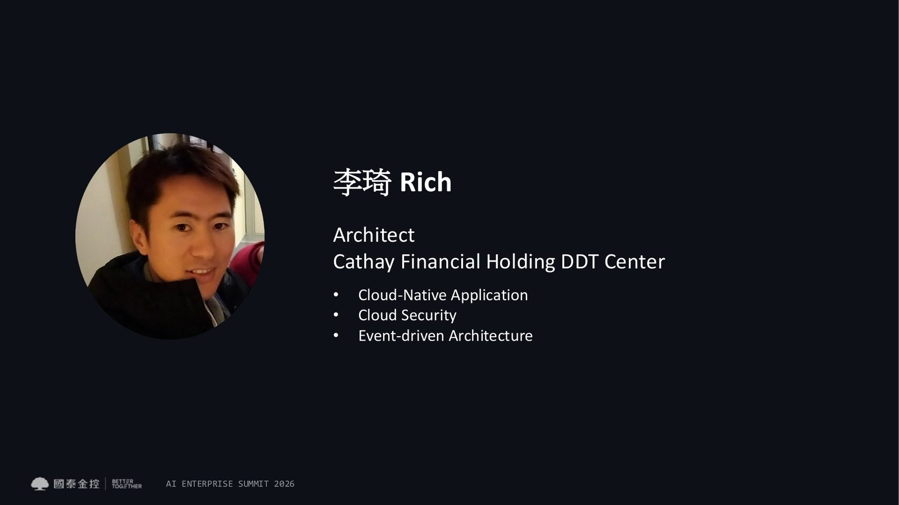
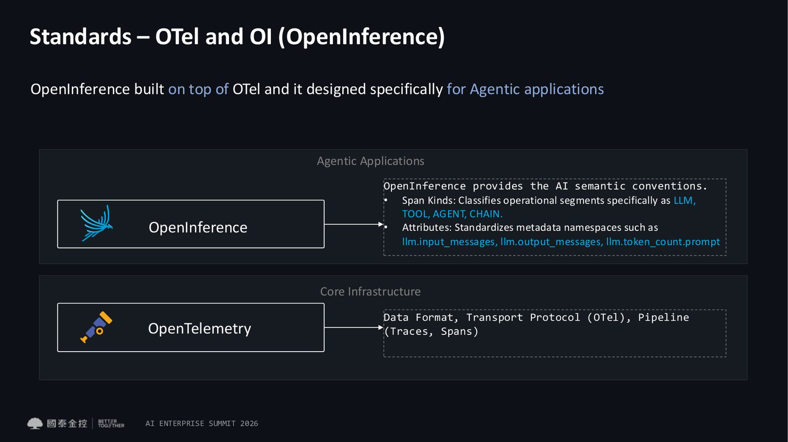
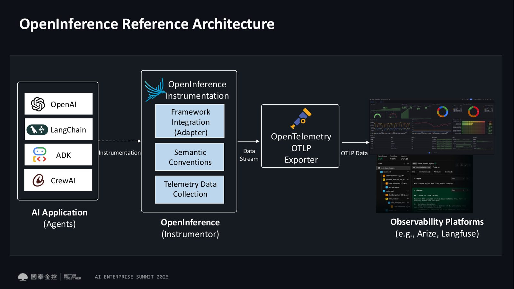
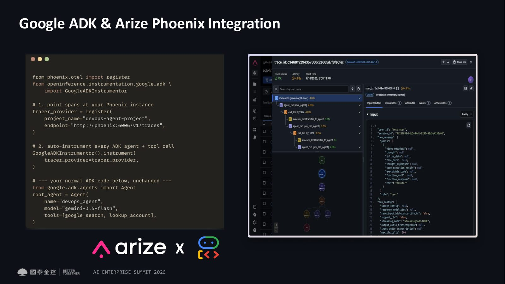

摘要
講者以國泰金控 DDT Center 架構師身分，說明傳統應用程式與 Agentic AI 系統在可觀測性上的根本差異：Agent 失敗往往是「沉默且機率性」的，難以像傳統服務的 500 錯誤那樣被立即發現。講題進一步介紹以 OpenTelemetry 與 OpenInference 為基礎的 Agent 專屬 Golden Signals、追蹤（Trace）架構，以及涵蓋結果與軌跡（Trajectory）的評測方法，協助企業建立可信賴的 Agentic AI 監控與評估體系。
重點整理
- Agent 系統失敗是「沉默、機率性、看似正確」，往往在數週後才透過使用者回饋浮現，代價包含 token 成本浪費、信任流失與合規風險
- 傳統應用是確定性系統，錯誤有明確代碼；Agentic 系統則由 LLM 動態決定下一步，相同輸入不一定產生相同軌跡，品質、成本與安全都必須納入 SLO
- 引用 OWASP Top 10 for Agentic AI 2026，指出風險已從「會說話的 AI（聊天機器人）」轉向「會行動的 AI（自主 Agent）」，新增如目標劫持／間接提示注入、工具濫用、跨工具權限提升、記憶與上下文污染等風險
- 採用 OpenInference 作為建立在 OpenTelemetry 之上的 AI 語意慣例標準，以 Span Kind（LLM／TOOL／AGENT／CHAIN）與屬性（如 llm.input_messages）記錄 Agent 的推理與工具呼叫軌跡
- Agent 評測需同時涵蓋「結果評測」（最終答案是否正確）與「軌跡評測」（是否選對工具、是否迴圈或走回頭路），並建議採用 Tier 1 單元測試、Tier 2 整合測試（Evaluator／LLM-as-a-Judge）與 Tier 3 端對端測試（HITL、標註）三層測試框架
重點圖片／架構圖




背景與挑戰
講者指出傳統網頁服務失敗時會產生明確、結構化且可被索引的錯誤（如 500 Internal Server Error），但 Agent 系統的失敗往往是沉默且機率性的，表面上看起來正確，卻可能在數週後才透過使用者回饋顯現問題，付出的代價包括 token 成本浪費、信任流失、合規曝險與失控迴圈。
確定性系統與機率性系統的差異
講者比較傳統應用程式與 Agentic 系統：傳統應用控制流程固定、端點已知、錯誤帶有明確代碼，延遲是主要的 SLO 指標；Agentic 系統則由 LLM 在執行期動態選擇下一步，相同輸入未必產生相同軌跡，失敗是語意層級而非狀態碼層級的問題，品質、成本與安全性都必須同時作為 SLO。講者也引用 OWASP Top 10 for Agentic AI 2026，說明威脅模型已從聊天機器人的資訊外洩與直接提示注入，轉向涉及規劃、工具呼叫、資料存取、記憶體與身分的代理式風險，例如目標劫持／間接提示注入、工具濫用、跨工具權限提升、記憶與上下文污染，以及缺乏人為監督的過度自主行為。
技術重點：Golden Signals 與追蹤架構
講者說明傳統 SRE 的四個 Golden Signals 需要擴展為 Agent 專屬的三大訊號家族，涵蓋指標（如每工作階段成本、成功率、P95 延遲、評測分數趨勢）、日誌（錯誤、防護欄觸發）與追蹤／Span（呈現單一使用者輪次的完整因果樹，包含提示與推理、工具呼叫、檢索文件與子 Agent）。在 Agent 系統中，追蹤本身就是文件——如同傳統軟體以程式碼作為文件一樣。技術上採用建立於 OpenTelemetry 之上、專為代理式應用設計的 OpenInference 語意慣例，透過 Span Kind 分類 LLM、TOOL、AGENT、CHAIN 等操作區段，並標準化如 llm.input_messages、llm.output_messages、llm.token_count.prompt 等屬性命名空間。
評測方法與工具鏈
講者說明 Agent 評測必須同時評估自主性、推理、工具使用與應對不可預期情境的能力，區分「結果評測」（評分最終答案、報告或程式碼，可用程式化檢查、LLM-as-a-Judge 或量表式評分）與「軌跡評測」（評估 Agent 是否選對工具、是否迴圈或走回頭路，能捕捉「答案正確但推理錯誤」這類沉默失敗）。建議採用三層測試框架：Tier 1 框架內建的單元測試、Tier 2 使用 Evaluator／LLM-as-a-Judge 的整合測試，以及 Tier 3 涉及人工參與（HITL）與標註的端對端測試。講者並介紹開源可觀測與評測平台 Arize Phoenix，可透過 pip install 快速整合超過 30 種框架的自動化插樁（如 Google ADK、LangChain、LlamaIndex、CrewAI）。
結論與啟示
講者總結，企業要讓 Agentic AI 從試驗走向可信賴的正式營運，必須建立涵蓋追蹤、指標、日誌與結果／軌跡評測的完整可觀測性架構，並以 OpenTelemetry／OpenInference 等開放標準確保跨框架的一致性與可稽核性。